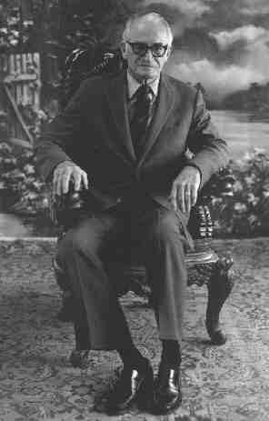
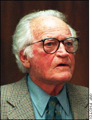

Goldwater naît à Phoenix (Arizona) le . Son grand-père, émigré
polonais, a établi un grand nombre de magasins en Arizona dans les années 1870s. À l'époque de la naissance de
Goldwater la famille est extrêmement riche. Goldwater entre à l'Académie Militaire Staunton à l'Université d'Arizona,
avant de rejoindre les affaires commerciales de la famille, à Phoenix.
Après la mort de son père , Goldwater joue un rôle important dans le développement de l'organisation
et dirige la compagnie . Il est vu comme un employé progressif et offre des
rétributions supérieures à la moyenne nationale des magasins de détail. La compagnie assure également la totalité des
dépenses de santé de ses employés, ainsi que les assurances accident et sur la vie. D'autres innovations sont un plan
de partage des profits et une semaine de maximum. Opposé aux unions commerciales, Goldwater décrit
sa stratégie commerciale comme "intérêt personnel éclairé".
Goldwater connaît également la difficulté de faire tourne une si grande société et fait 2 crises nerveuses
et . Il commence aussi à boire beaucoup et essaie plusieurs fois sans succès d'arrêter l'alcool.
Avec l'arrivée de la seconde guerre mondiale, Goldwater rejoint l'USAF. D'abord formateur pour le commandement
d'artillerie, il sert ensuite hors du continent. À la fin de la guerre , Goldwater a le grade de
Brigadier General.
Opposé à Franklin D. Roosevelt et au New
Deal, ayant une aversion pour Harry S. Truman et ses politiques sociales
progressistes, Goldwater rejoint le parti républicain et est élu au Sénat . Il devient tout de suite
un supporter de McCarthy et fait partie des 22 senateurs qui votent contre sa censure .
À l'extrême-droite du parti républicain, Goldwater critique souvent la politique d'Eisenhower. Il décrit sa politique sociale comme un "New Deal à dix sous" et
s'oppose résolument à la décision du président d'utiliser les troupes fédérales à Little Rock. Goldwater pense
également qu'Eisenhower est trop doux sur les unions commerciales et se plaint de son incapacité à équilibrer le
budget.
Goldwater exprime ses visions conservatrices dans la chronique d'un journal syndiqué. Une collection de ces articles
est publiée comme La Conscience du Conservatisme . Cette année-là, considéré comme trop à droite
pour être un candidat à la présidence, Goldwater supporte Richard Nixon contre Kennedy.
Candidat à la présidence
Goldwater et Kennedy en 1962
En tant qu'opposant aux lois fédérales sur les droits civils, Goldwater est très critiqué par Lyndon B. Johnson. Il favorise aussi une approche plus aggressive de la guerre
du Vietnam. Nominé comme candidat à la présidence du parti républicain , il exaspère nombre de ses
supporters potentiels en votant que l'Acte Anti-Pauvreté de Johnson .
Ses visions anti-communistes extrêmes effraient le public américain. Dans une interview télévisée, il explique
qu'il
utiliserait l'arme nucléaire contre les forces communistes au Vietnam. Bien que ses visions sur les droits civils le
rendent populaire dans le sud profond, il est facilement battu par Johnson de 42328350 votes contre 26640178.
Goldwater reçoit 38,8 % des votes et ne remporte que 6 états.
En Goldwater regagne de justesse son siège au Sénat, lorsque les scandales, dont les allegations
d'écoutes par Bob Kennedy, commencent à ébranler le gouvernement Kennedy. Il soutient la présidence de Nixon, mais
reste critique sur sa tentative de contrôler les prix et les salaires. Goldwater défend cependant loyalement Nixon
lors du scandale du Watergate et ce n'est qu'à partir du qu'il rejoint la campagne
pour le destituer. Nixon sait alors qu'il ne pourra résister et démissionne 4 jours plus tard.
Le , Goldwater émêt une requête d'information FOIA adressée à Shlomo Arnon, de UCLA
Experimental College :
Le sujet des OVNIs est de ceux qui m'intéressent depuis longtemps. Il y a 10 ou 12 ans de cela, j'ai entrepris un
effort pour découvrir ce qui se trouvait dans ce bâtiment de la Base de l'Air Force de Wright Patterson où
l'information recueillie par l'Air Force Base est stockée, et on me refusa clairement cette requête.
Ceci est toujours classé au-delà de Top Secret. J'ai, depuis, entendu qu'un plan existait pour en diffuser une
partie, si ce n'est la totalité, de ces données dans un futur proche. Je suis juste aussi anxieux que vous de
découvrir ces éléments, et espère que nous n'aurons pas à attendre trop longtemps.
Goldwater

Goldwater continue au Sénat où il s'oppose à la politique de Jimmy Carter.
Dans une lettre du , Goldwater déclare :
Il est vrai que l'on m'a refusé l'accès à un bâtiment de la Base de l'Air Force de Wright-Patterson à Dayton (Ohio), parce que je n'y ai jamais mis les pieds. Je
ne peux vous dire ce qu'il y avait à l'intérieur. Nous connaissons tous les rumeurs (à propos d'un OVNI et de son
équipage qui auraient été récupérés). Je n'ai jamais rien vu que je puisse appeler un OVNI, mais j'ai des amis
intelligents qui, eux, l'ont vu.
mais est un supporter enthousiaste de Ronald Reagan. Le
, suite à une requête de Lee M. Grahan, il répond :
Tout d'abord, laissez-moi vous dire que depuis longtemps abandonné tout espoir d'avoir accès à la dénommée Salle
Bleue (Blue Room) de Wright-Patterson, ayant connu une longue suite de refus
de responsable après responsable, et a donc abandonné.
En réponse à vos questions, la première est globalement exacte. Je ne connais personne ayant accès à la
"Salle Bleue," et n'a aucune idée de son contenu comme je ne sais non plus si quelque chose a été déplacé. Je ne
peux répondre à votre 6ᵉ question, et en fait, je ne vois personne pouvant y répondre.
Pour vous dire la vérité, M. Graham, ceci a été classé si secret, et même si j'admettais que beaucoup en a
été diffusé, il est tout simplement impossible d'obtenir quoi que ce soit là-dessus.
Le , suite à une requête de William S. Steinman, il répond :
Pour répondre à vos questions, je n'ai jamais eu accès à la dénommée "Salle Bleue" à Wright Patterson, et n'ai donc aucune idée de ce qui s'y trouve. Je n'ai aucune
idée de qui contrôle le flux de ceux qui "doivent savoir" parce que, très franchement, on m'a déclaré d'une manière
si emphatique que cela n'était en aucun cas mes affaires que je n'ai plus jamais réessayé d'en faire mes affaires
depuis.
Je vous souhaite bonne chance dans votre enquête. Je fais partie de ceux qui pensent qu'avec 2 milliards de
planètes dans notre univers, il doit y en avoir quelques-unes au moins hébergeant la vie.
Barry Goldwater

Après , Goldwater découvre le projet Phoenix et diligente une
enquête. Les fonds étant privés, il ne peut trouver aucune trace de financement du gouvernement.
Le Pentagone l'aurait prévenu de modérer son intérêt
pour les
ovnis.
C'est l'amendement au Goldwater-Nichols Departement of Defense Reorganization Act de 1986 qui a institué
l'USSOCOM.